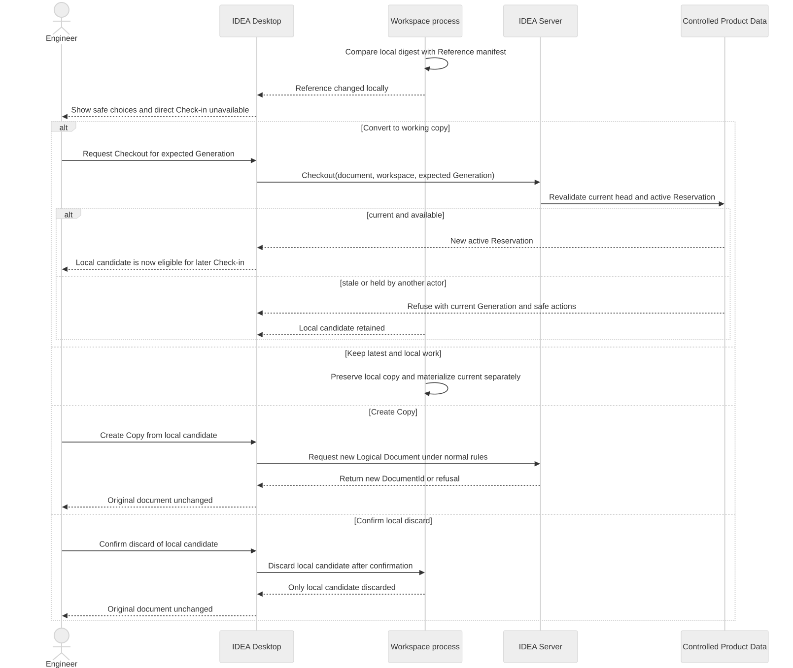

Modified Reference decision sequence
ARCH-VIEW-SEQ-005 — A changed local Reference cannot be checked in. The engineer may request Checkout against its exact expected Generation. Only a still-current and available Generation yields a new Reservation while keeping local bytes. Otherwise the original document is unchanged and the local candidate remains available for safe copy, current-file comparison, deliberate reapplication, Create Copy or confirmed discard.
